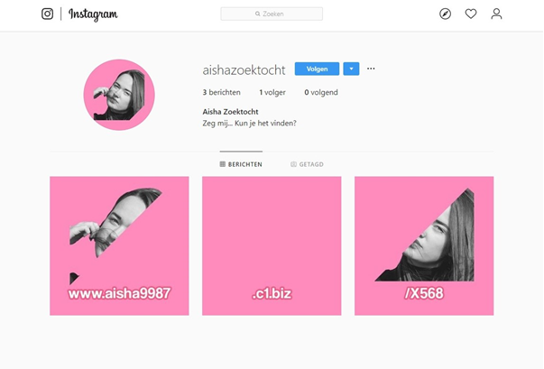
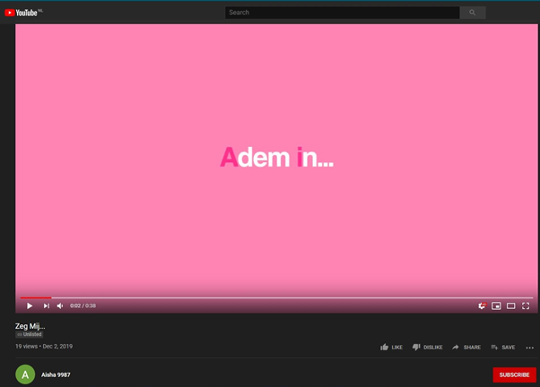

Artistic Exploration
Sprint 0
The goal of this sprint is to get to know our client. As a starting point, we made a general summary to get the overview of our client.
Ability to deliver complete media products for the client that meets their needs.
The goal of this sprint is to get to know our client. As a starting point, we made a general summary to get the overview of our client.
Artificial Reality have always been in my intrest and during this sprint i was able to make an end product in the form of an AR filter(hosted in Snapchat) for the client.
The way i developed this AR filter is to use an AR development software called Lens Studio provided by Snapchat. Then first i made the 'segmentation' texture for the pink background to not clip with user's body. Then i made the 'Zeg Mij' comic bubble that anchors to the user's head. As for the finishing touches i include Aisha's flagship song to play as the AR filter loads.
Attached below is the scan code for the AR filter. By scanning it using the Snapchat app, you will able to preview the AR filter for yourself on your personal phone.

Aisha’s Online Quest is made to grab the interest of her audience by providing challenging mini puzzles and satisfying reward.
After we made some brainstorm, we clarified the system and the journey for the user. Underneath the steps to follow as user:
Below we show the links and the steps to follow for our current product. First, the user gets the code encrypted in our video. Which later brings him to this instagram account: https://www.instagram.com/aishazoektocht/
Then, if the user is able to figure out the link that is hidden in the instagram posts, the user will get redirected to this website: http://www.aisha9987.c1.biz/X568/
Afterwards, the user has to fill in a password to get to the next part of the Online Quest. If the user fills in the password “beschermd”, the user will get redirected to another part of the Online Quest, a YouTube video: https://www.youtube.com/watch?v=WrfrC2MousY
In this video, the user has to figure out the hidden message. The hidden message is a link to another subsite of the earlier website: http://www.aisha9987.c1.biz/C249/
At the end, the website is a poster of Aisha. The poster of Aisha is actually a QR-code to the prize of the Quest. If you scan the code you will get redirected to another part of the website containing a Snapchat-code. If you scan the code you will get a new filter on your snapchat account. The Snapchat-filter is the price after completing the Online Quest.